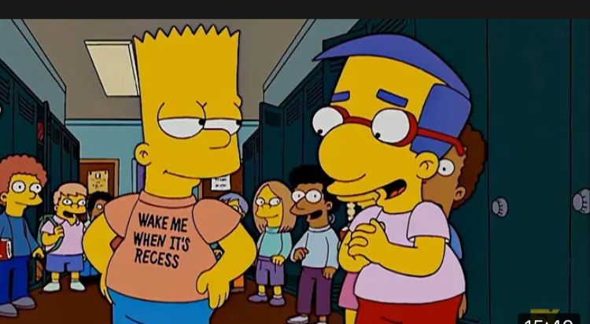

Por accidente, y con doble intencion. Bart se convierte en creador de contenidos de remeras sin estapados, usando como liezo las misma, escribiendo los pesamientos mas trasparente y originales que se le ocurran  asi comenzo este emprendimiento serigrafico.